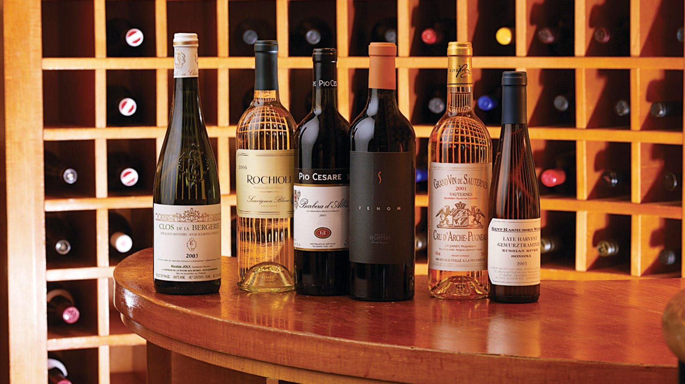

My Bucket List
Things I Want To Do
Go to the Beach
I love to go to the beach because it helps me to relax and lesen my stress. The most significant of these beach benefits is the elevation of my mood as the cool ocean breeze helps me to relax. The sound of the waves can be very pleasing to my ears. Some people say salty air, which holds a host of negative ions, can make us happier.
Go Hiking
I want to go hiking because it makes your body healthy and fit, you will also enjoy the view of the nature which makes me appreciate how beautiful the world is. I never tried hiking before but I will surely enjoy it because of the fresh air and the beautiful view of mother nature that can lessen my stress. For me, hiking seems fun.
Have My Own Car
I always wanted to have my own car where I do not need to ask permission to use it. Since I was a child, I love cars very much. I dreamt having a sports or racing car in the future because of the elegant style. I consider having my own car in the future is the symbol of my achievements in life and it is very worth it to buy a sports car.
Become a Successful IT Professional
Becoming an IT professional is my dream job because I like how the way an IT professional do especially we live in a world full of modern computers and the technology continues to progress. I personally enjoy in doing codes or programming and I am very interested in studying the wonders of computers.
Buy My Own Condo Room
I would love to have my own place in the future where I can do anything I want and have some peace. I like to live in a condominium because I also like the view of the city which is very beautiful. I can stare the city lights for hours. Living and designing my own room in the condominium is one of my dreams in the future.

Build My Own Personal Wine Collection
I personally like to have a room full of wine collection because wines are very valuable when they are stored for a long time and its amazing to have a full of vintage wine collections which can be add beauty in your home. I can somehow sell and drink some of these precious wines in the future. vintage wines are very popular to people.
Try the Skydiving
I am always curious on what it feels like to go skydiving especially there are very few peaople experienced jumping above from an airplane and how it feels like above the clouds while falling. I think jumping from an airplane and you are at the top of the clouds feels so wonderful and peaceful. Skydiving is very amazing to try.
Campfire With My Friends
I never tried to go camping or get near at a campfire in my whole life. I am looking forward to have a camping with my friends near at the campfire. I think its very comforting because you and your friends alone will just talk about life all night long, playing the guitar, and singing near the campfire, just enjoying the beautiful moment.
Go Skiing
Seeing people skiing in the movies looks very fun to do especially I love cold places but I never had seen a snow before. I plan to go skiing in the future in other cold countries to have fun and experience it first hand. Skiing in the snow and enjoying the breeze of the snow can make me feel alive and energetic. I hope I will enjoy skiing.